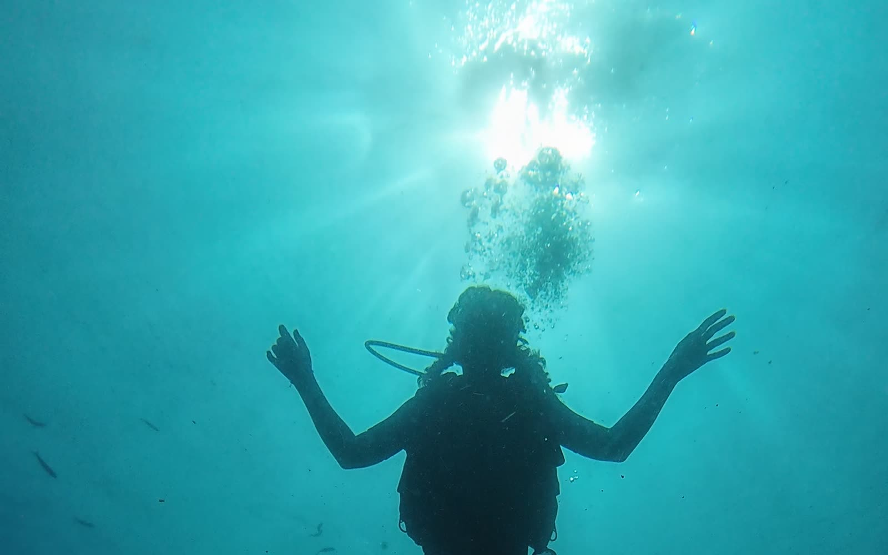
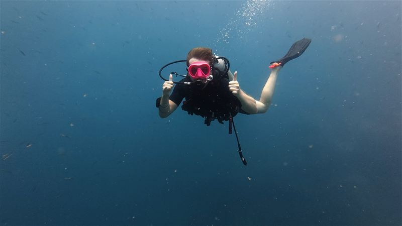
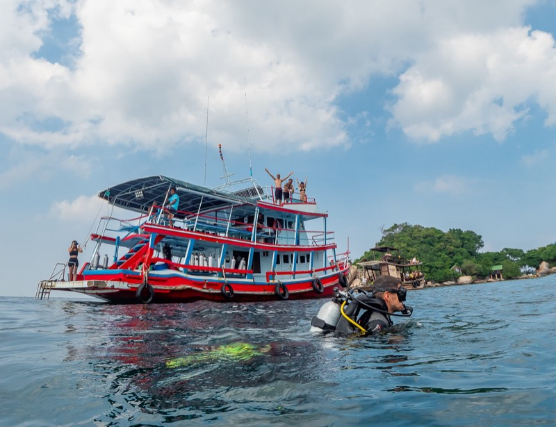

Erste Stufe nach unten
Knapp unter deiner Open-Water-Grenze: deine Luft öfter kontrollieren und verstehen, wie die Tiefe deine Nullzeit verändert.
Bis Weihnachten fahren wir um 8:00 ab: Treffpunkt am Pier von Chaloklum um 7:45, zurück gegen 13:30–14:00.Warum?


Sail Rock · bis 40 m
Unsere Empfehlung nach dem Open Water
SSI vergibt die Stufe Specialty Diver für zwei beliebige Spezialkurse. Von allen Möglichkeiten sind Deep und Enriched Air Nitrox die zwei, die wirklich erweitern, was du kannst — deshalb empfehlen wir sie als nächsten Schritt nach dem Open Water.
Der Kurs
Die Deep-Tauchgänge gehen in drei Stufen nach unten, damit sich jede neue Tiefe vertraut anfühlt, bevor du weitergehst. Alle finden an Sail Rock statt, dessen Wände bis zu einem Sandgrund auf 40 Metern abfallen.
Knapp unter deiner Open-Water-Grenze: deine Luft öfter kontrollieren und verstehen, wie die Tiefe deine Nullzeit verändert.
Dein Gas planen, Tiefenrausch an dir selbst bemerken und zusehen, wie die Farben verblassen, während sich das Licht verändert.
Hinunter bis zum Sand am Fuß der Felsspitze, mit einem vorsichtigen Aufstieg und Sicherheitsstopp auf dem Weg nach oben.
Du analysierst deine eigene Flasche, beschriftest sie und planst den Tauchgang für ihr Gemisch — und genießt dann die längere Grundzeit.

Das Klassenzimmer ist das Boot
Theorie, ernst genommen
In diesen Kursen ist die Theorie wirklich wichtig, und so behandeln wir sie auch. Wir nutzen die einstündige Fahrt nach Sail Rock und die Oberflächenpause zwischen den Tauchgängen, um die Deep- und Nitrox-Theorie durchzugehen, mit dem Meer vor Augen.
Am letzten Tag gehen wir, wie bei unseren Open-Water-Kursen, nach dem Boot zurück in den Laden zur schriftlichen Prüfung und klären dabei letzte Fragen. Boris, unser leitender Instructor, unterrichtet diese Kurse meist selbst, wenn sie auf Englisch oder Spanisch stattfinden.
Einzeln
Wenn du nur einen der beiden willst, kannst du jeden Spezialkurs auch einzeln machen.
2 Tage · SSI
Die drei Deep-Tauchgänge bis 40 Meter an Sail Rock, mit Deep-Theorie und Prüfung.
2 Tage8,500฿
BuchenTheorie · SSI
Das Enriched-Air-Nitrox-Brevet mit Theorie und Prüfung, ohne Tauchgänge.
Theorie4,500฿
BuchenTheorie + 2 Tauchgänge · SSI
Dasselbe Brevet plus zwei Nitrox-Tauchgänge an Sail Rock, um es direkt in die Praxis umzusetzen.
Mit 2 Tauchgängen7,500฿
BuchenFragen
Der Specialty-Diver-Kurs mit Deep und Nitrox zusammen kostet 13.500฿. Einzeln kostet Deep 8.500฿ und Nitrox 4.500฿ nur Theorie oder 7.500฿ mit zwei Tauchgängen. Ausrüstung, Nitrox-Flaschen und Mittagessen sind inklusive; der Verleih einer Unterwasserkamera kostet 600฿.
SSI verleiht dir die Stufe Specialty Diver, wenn du zwei Spezialkurse abschließt. Wir empfehlen Deep und Nitrox, weil sie die zwei sind, die dein Tauchen danach am meisten erweitern.
Bis 40 Meter, die Grenze des Sporttauchens. An Sail Rock heißt das, du erreichst den Sandgrund am Fuß der Felsspitze.
Nitrox, oder angereicherte Luft, hat mehr Sauerstoff und weniger Stickstoff als normale Luft. Du nimmst weniger Stickstoff auf, das bedeutet längere Nullzeiten und kürzere Oberflächenpausen — sehr nützlich an einem Tag mit mehreren Tauchgängen. Tiefer tauchen kannst du damit nicht; im Kurs lernst du sogar die maximale Tiefe für jedes Gemisch.
Ein Open-Water-Diver-Brevet und ein Mindestalter von 15 Jahren.
Meist Boris, unser Manager und leitender Instructor, wenn der Kurs auf Englisch oder Spanisch ist. Er ist seit 2015 Tauchprofi und hat mehr als 5.000 Tauchgänge.
Meist auf dem Boot: während der einstündigen Fahrt nach Sail Rock und in der Oberflächenpause zwischen den Tauchgängen. Am letzten Tag schließen wir im Laden mit der schriftlichen Prüfung und Zeit für letzte Fragen ab.
Sag uns deine Brevetstufe und deine Reisedaten auf WhatsApp, und wir sagen dir, welche Option am besten passt.
Siehe auch den Advanced-Open-Water-Kurs oder alle unsere Kurse.